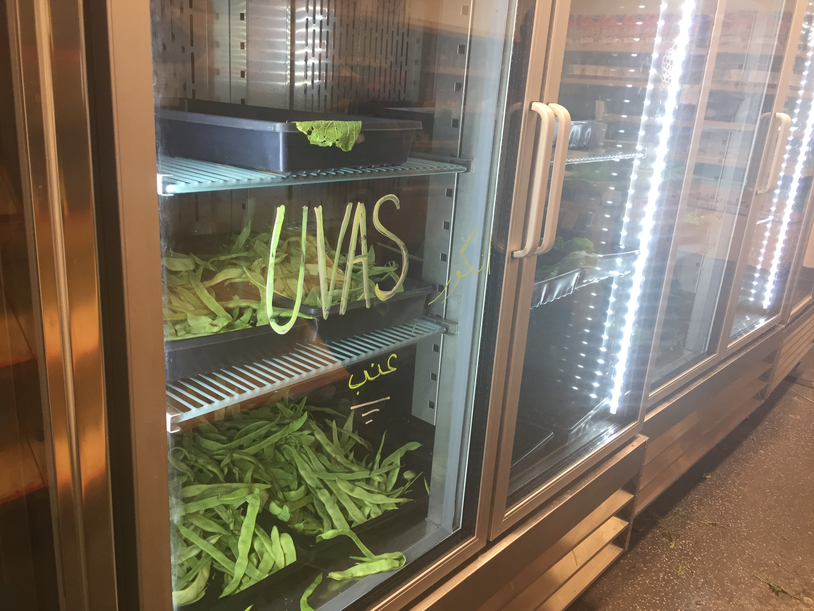
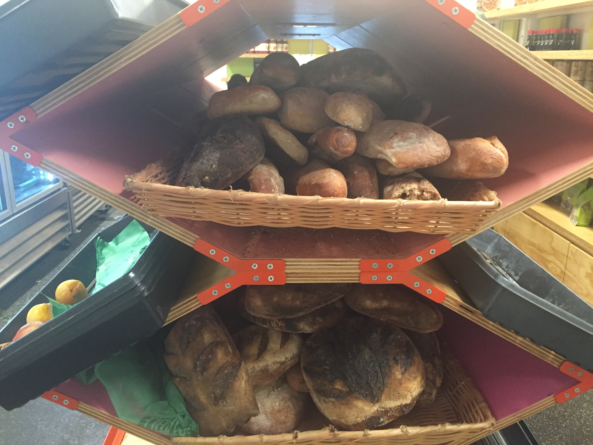

UC Berkeley Food Pantry
Food Insecurity
I’ll admit, I initially had some trouble even trying to locate this place under the ASUC. When I found it, I was met with a small room that looked sort of like a grocery store, which was connected to a warehouse which is presumably for storing all the food that wasn’t on the shelves.
Like I stated, the resemblance of this food pantry to a regular grocery store is uncanny, but upon closer inspection I began to notice some differences. Just like in a normal store, the food is packaged and lined up on shelves or in refrigerators. However, there are no name brands I could recognize. In fact, there was only one brand for each product. The food pantry clearly isn’t interested in tricking you into thinking that you have a choice.
The most notable difference between the pantry and a normal store is that the food is free, but reserved for people who are in need of it. They pick out some vegetables, cereal, etc, and “pay” for it with a special card (not EBT). Since the pantry is completely underground, it is expected that it isn’t lit up by the sun like farmers markets are. In addition, the atmosphere felt stressful and tense. Customers were in and out quickly but also seemed to carry a weight with them.
In fact, one man who I tried to interview was really nervous when speaking to me; when I asked him what his experience was at the pantry he just said “great”. His body language said a lot more which he was too polite to say, possibly that he was too insecure to talk about his food insecurity and/or he just needed to be quick and hurried out with his food.